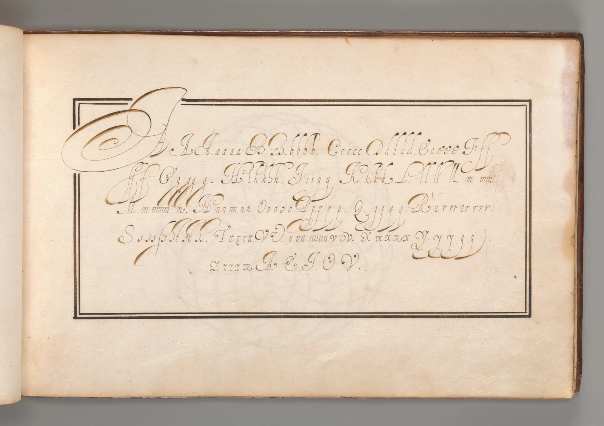
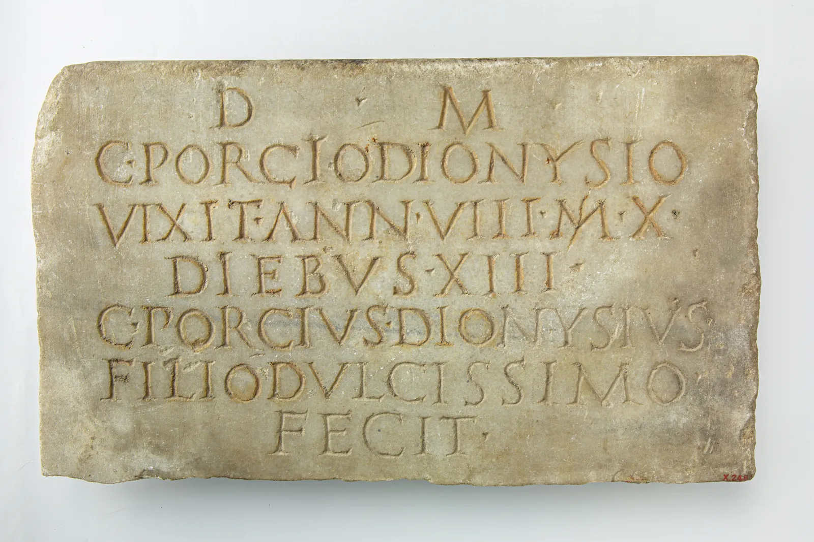

글자의 해부
워드프로세서에서 글꼴만 바꿨는데 같은 12포인트 글이 한 줄 더 길어지거나, 갑자기 작아 보인 적이 있을 것이다. 숫자는 그대로인데 글자는 커지고 작아진다. 글자 크기라는 숫자가 실제로 무엇의 크기인지 알면 이 수수께끼가 풀린다. 이 장은 라틴 글자를 받치는 보이지 않는 줄들과 획의 성질을 하나씩 떼어 보고, 마지막에는 손잡이를 끌어 글자 한 벌의 뼈대를 직접 늘려 본다.
- 기준선, x높이, 캡하이트, 어센더, 디센더를 실제 글꼴에서 찾아낸다.
- 글자 크기가 글자 자체가 아니라 글자 상자(em)의 크기라는 것을 설명하고, 같은 크기의 글꼴이 다르게 보이는 이유를 x높이로 설명한다.
- 획의 대비와 축이 넓은 펜촉의 각도에서 나왔다는 것을 직접 써 보며 확인한다.
- 세리프, 카운터, 아퍼처가 글자의 인상과 작은 크기에서의 모습에 미치는 영향을 본다.
- 오버슈트처럼 수치를 일부러 어긋나게 하는 시각 보정을 이해하고, 간판 로고타입 "E"의 비례를 정한다.
보이지 않는 다섯 줄
라틴 글자는 공책의 줄처럼 보이지 않는 가로줄 몇 개에 맞춰 선다. 가장 중요한 것은 모든 글자가 발을 딛는 기준선(Baseline)이다. 소문자 x의 윗변 높이를 x높이(x-height)라 하고, 이 높이 안에 소문자의 몸통이 들어간다. 대문자 H의 높이는 캡하이트(Cap height)다. b, d, h, l처럼 x높이 위로 솟는 획을 어센더(Ascender), p, q, g처럼 기준선 아래로 내려가는 획을 디센더(Descender)라고 한다.
이 줄들은 글꼴 파일 안에 숫자로 들어 있지만 글자 위에 그려져 있지는 않다. 아래 시뮬레이터에서 실제 글꼴 위에 다섯 줄을 직접 맞춰 본다. 처음에는 줄이 엉뚱한 자리에 있다. 줄을 위아래로 끌어 기준선, x높이, 캡하이트, 어센더, 디센더에 맞춘 뒤 "실제 선 보기"를 켜서 확인한다.
보이지 않는 줄 찾기
네 글꼴에서 줄을 맞춰 보면, 줄들의 순서는 같은데 간격이 글꼴마다 다르다는 것을 알 수 있다. EB Garamond는 x높이가 캡하이트의 약 6할이고 어센더가 길다. Inter는 x높이가 캡하이트의 4분의 3쯤으로 소문자가 크고, 어센더가 짧다. 이 간격의 차이가 글꼴의 인상을 크게 바꾼다. x높이가 낮고 어센더가 긴 글꼴은 우아하고 고전적으로, x높이가 높은 글꼴은 크고 또렷하고 현대적으로 보이는 경향이 있다.
글자 크기는 무엇의 크기인가
"12포인트"라고 할 때 12포인트는 글자 H의 높이도, x의 높이도 아니다. 금속 활자 시절, 활자는 글자 하나를 윗면에 새긴 직육면체 금속 조각이었다. 이 조각의 몸통 높이가 활자 크기였고, 글자는 그 몸통 위에 위아래 여유를 두고 새겨졌다. 디지털 글꼴은 이 몸통을 em 상자(Em square)라는 가상의 네모로 물려받았다. 글자 크기 12포인트는 이 상자의 높이가 12포인트라는 뜻이고, 그 안에 글자를 얼마나 크게 그려 넣을지는 글꼴 디자이너가 정한다.
그래서 같은 12포인트라도 x높이가 em의 40%인 글꼴과 55%인 글꼴은 소문자의 실제 크기가 1.4배쯤 차이 난다. 우리가 본문을 읽을 때 눈에 들어오는 것은 대부분 소문자이므로, 체감 크기를 정하는 것은 글자 크기라는 숫자보다 x높이다. 아래 시뮬레이터는 네 글꼴을 같은 글자 크기로 짠 것과, x높이가 같아지도록 크기를 조정한 것을 겹쳐 놓았다. 경계선을 끌어 비교한다.
같은 크기, 다른 크기
font-size-adjust가 오른쪽처럼 x높이를 기준으로 크기를 맞추는 기능이다.)여러 글꼴을 한 지면에 섞을 때, 혹은 글꼴을 바꿀 때 "같은 크기로" 바꾸면 글이 갑자기 커지거나 작아지는 이유가 이것이다. 본문 글자 크기를 정할 때 다른 사람의 추천 숫자를 그대로 가져오기 전에, 그 숫자가 어떤 글꼴의 숫자인지 확인해야 한다. 같은 이유로 이 책의 뒤쪽 장들이 정하는 크기는 항상 어떤 글꼴 기준인지 함께 적는다.
한글은 사정이 조금 다르다. 한글 글자는 em 상자를 거의 채우고, 받침이 있는 글자와 없는 글자가 상자 안에서 차지하는 높이도 다르다. 라틴 글자처럼 "몸통 높이"라는 하나의 기준선이 뚜렷하지 않다. 한글이 라틴 글자의 기준선과 만날 때 생기는 문제는 3장에서 다룬다.
획: 대비와 축은 펜에서 왔다
글자를 이루는 선을 획(Stroke)이라 한다. 많은 글꼴에서 획은 굵기가 고르지 않다. 세로획은 굵고 가로획은 가늘며, o 같은 둥근 글자는 어떤 곳은 굵고 어떤 곳은 가늘다. 가장 굵은 획과 가장 가는 획의 차이를 대비(Contrast), 둥근 획에서 가는 부분끼리 이은 선의 기울기를 축(Stress, axis)이라고 한다.
이 굵기 변화는 디자이너가 마음대로 정한 장식이 아니라, 끝이 납작한 펜으로 글씨를 쓰던 역사에서 왔다. 납작한 펜촉은 펜촉의 넓은 면을 가로지르는 방향으로 움직이면 굵은 선을, 펜촉의 가장자리 방향으로 움직이면 가는 선을 낸다. 펜촉의 각도를 고정한 채 o를 쓰면 굵은 곳과 가는 곳이 저절로 생기고, 가는 곳은 펜촉의 각도만큼 기울어진 자리에 온다.

아래 시뮬레이터는 납작한 펜촉으로 낱말 "one"을 쓴다. 글자의 뼈대(가는 회색 선)는 그대로 두고, 펜촉의 각도만 바꾼다. 오른쪽 위의 원판에서 펜촉을 끌어 돌린다. 빨간 점선은 o에서 가장 가는 두 곳을 이은 선, 곧 축이다.
납작한 펜촉으로 쓰기
펜촉의 각도가 곧 축이 되고, 펜촉의 너비와 획의 방향이 대비를 만든다. 네덜란드의 글자 디자이너이자 교육자 헤릿 노르트제이(Gerrit Noordzij, 1931–2022)는 『획』(The Stroke, 1985)에서 이렇게 펜촉의 각도가 고정된 채 움직이는 방식을 "평행 이동"(translation), 끝이 뾰족한 펜을 눌러 획을 넓히는 방식을 "팽창"(expansion)이라 부르고, 라틴 글자의 굵기 변화를 이 두 방식으로 설명했다. 오래된 양식의 활자는 대체로 평행 이동에 가깝고 축이 기운다. 18세기 말 이후의 이른바 모던 활자는 축이 수직이고 대비가 매우 크며, 팽창에 가깝다. 이 갈래들의 이름과 역사는 4장에서 만난다.
세리프: 획의 끝
획의 끝에 붙은 작은 돌기를 세리프(Serif)라 하고, 세리프가 없는 글꼴을 산세리프(Sans serif, 프랑스어 sans는 "없이")라고 한다. 세리프의 기원에 대해서는 여러 설명이 있다. 고대 로마의 돌에 새긴 글자에서, 석공이 붓으로 먼저 쓴 밑글씨의 획 끝 모양을 따라 새긴 흔적이라는 설명이 널리 알려져 있지만(에드워드 커티치의 주장), 끌로 획을 깨끗이 끝맺으려던 방법이라는 설명도 있어 하나로 정해져 있지 않다.

세리프는 모양에 따라 성격이 크게 달라진다. 획과 세리프 사이를 부드러운 곡선으로 이은 브래킷 세리프, 획만큼 두꺼운 네모난 슬랩 세리프, 머리카락처럼 가는 헤어라인 세리프가 대표적이다. 아래 시뮬레이터는 이 장에서 직접 만든 글자 한 벌에 세리프만 바꿔 단다. 길이 슬라이더로 세리프를 늘이고, 보는 크기 슬라이더로 그 글자를 작게 줄여 본다.
세리프 갈아 끼우기
세리프가 글줄을 따라 눈을 이끌어 본문을 더 잘 읽히게 한다는 말이 오래 전해졌다. 그럴듯하지만, 세리프와 산세리프를 비교한 연구들은 매체와 크기, 독자에 따라 서로 다른 결과를 냈고 뚜렷한 차이를 찾지 못한 연구도 많다. 이 책은 이 말을 통설로 다룬다. 근거는 7장에서 살핀다. 위 시뮬레이터에서 확인할 수 있는 것은 그보다 단순한 사실이다. 세리프는 글자의 인상을 바꾸고, 가는 세리프는 작은 크기와 낮은 해상도에서 사라진다.
카운터와 아퍼처: 글자 속의 빈 곳
글자를 읽을 때 우리는 검은 획만 보는 것이 아니다. o의 가운데, n의 아치 아래, e의 위쪽 눈처럼 획으로 둘러싸인 빈 곳을 카운터(Counter)라 한다. c와 e처럼 카운터가 바깥으로 열린 곳의 입구를 아퍼처(Aperture)라 한다. 한도경의 말 "글자도 그림처럼 사이를 본다"는 글자 사이만이 아니라 글자 안의 빈 곳에도 해당한다.
카운터와 아퍼처는 글자가 작아지거나 멀어지거나 흐려질 때 진가를 드러낸다. 아래 시뮬레이터에서 c, e, o를 굵게 하고 아퍼처를 닫은 뒤, 흐림 슬라이더로 멀리서 보는 모습을 흉내 낸다.
빈 곳이 닫히면
큰 카운터와 넓게 열린 아퍼처는 공항과 도로 표지판용 글꼴에서 특히 중요하게 다뤄지는 성질이다. 멀리서, 빠르게, 비스듬히 읽어야 하는 글자일수록 빈 곳이 넉넉해야 글자끼리 덜 헷갈린다. 반대로 아퍼처가 좁고 카운터가 작은 글꼴은 크게 쓰면 단단하고 긴장감 있게 보인다. 어느 쪽이 맞는지는 크기와 거리, 곧 쓰임이 정한다(7장, 12장).
| 부분 | 뜻 | 어디서 보나 |
|---|---|---|
| 스템(Stem) | 글자의 주된 세로획 | l, n, H의 기둥 |
| 보울(Bowl) | 카운터를 둘러싼 둥근 획 | b, d, o, p |
| 아치(Arch) | 스템에서 뻗어 나온 둥근 지붕 | n, h, m |
| 암·크로스바(Arm, crossbar) | 한쪽 또는 양쪽이 이어진 가로획 | E의 팔, H와 e의 가로획 |
| 터미널(Terminal) | 세리프가 아닌 획의 끝 | c, e, a의 끝 |
| 카운터 · 아퍼처 | 획으로 둘러싸인 빈 곳 · 그 입구 | o의 속, c와 e의 열린 곳 |
오버슈트: 눈을 위한 거짓말
그림 1에서 d의 둥근 획이 x높이 선을 살짝 넘는 것을 보았다. 실수가 아니다. 같은 높이의 네모와 동그라미를 나란히 놓으면 동그라미가 더 작아 보인다. 동그라미는 꼭대기와 바닥에서 선에 한 점으로만 닿고, 그 근처는 네모보다 비어 있기 때문이다. 그래서 글꼴 디자이너는 o, c, s 같은 둥근 글자를 선보다 조금 위아래로 넘치게 그린다. 이것을 오버슈트(Overshoot)라 한다. A나 V처럼 뾰족한 꼭짓점은 닿는 면이 더 작아서 더 많이 넘친다.
비슷한 보정이 하나 더 있다. 같은 굵기의 가로선과 세로선을 놓으면 가로선이 더 굵어 보인다. 그래서 대비가 거의 없어 보이는 산세리프에서도 가로획은 세로획보다 조금 가늘게 그린다. 아래 시뮬레이터에서 오버슈트 슬라이더를 0에서 올리고, 가로획 보정을 켜고 끈다.
같은 높이가 같아 보이게
측정값이 보여 주듯 실제 글꼴의 오버슈트는 x높이의 몇 퍼센트에 불과하다. 본문 크기에서는 픽셀 하나도 안 되는 차이지만, 이 보정이 없으면 o가 들어간 낱말마다 그 자리가 움푹 들어가 보인다. 숫자로 같은 것과 눈으로 같은 것은 다르고, 타이포그래피는 언제나 눈의 편을 든다. 이 원칙은 글자 사이의 간격을 다루는 5장에서 다시 만난다. 수치상 같은 간격이 눈에는 고르지 않게 보이기 때문이다.
글자 한 벌의 뼈대를 늘려 보기
지금까지 따로 본 성질들, 곧 x높이와 어센더, 획의 굵기와 대비, 축, 세리프를 한꺼번에 움직여 본다. 아래의 글자들은 모두 이 장의 모형 글꼴이다. 캡하이트를 기준(1)으로 두고, 오른쪽 끝의 손잡이로 x높이, 어센더, 디센더 선을 위아래로 끌면 글자가 따라 늘어난다. 슬라이더로 굵기와 대비, 너비를 바꾸고, 축과 세리프를 고른다.
글자 한 벌 만들기
손잡이 몇 개로 같은 뼈대가 전혀 다른 글꼴처럼 보인다는 것을 확인했다. 대비가 낮고 세리프가 없으며 x높이가 높으면 오늘날의 화면용 산세리프에 가깝고, 축이 기울고 대비가 중간이며 브래킷 세리프가 있으면 오래된 책의 활자에 가깝다. 이렇게 글자의 여러 성질이 함께 움직이는 묶음이 곧 글꼴의 "갈래"다. 다만 실제 글꼴들은 이 묶음 사이 어딘가에 있어서, 갈래의 경계는 생각보다 흐리다(4장).
서윤의 여름 조판 노트
간판의 E는 한글보다 가늘어 보였다
서윤은 간판 "책방 E"의 첫 스케치를 컴퓨터에서 했다. 한글 "책방"은 손으로 그렸고, E는 가지고 있던 산세리프 글꼴의 보통 굵기를 그대로 키워 붙였다. 1.8 m 폭으로 출력해 서점 건너편 골목에서 보니, E가 한글 옆에서 유난히 가늘고 작았다. 간판은 가을에 정한 책방 초록(#2f7d5b) 바탕에 크림(#ffe2d7) 글자로 할 생각인데, 두 색의 대비는 이 책의 모델로 4.1:1이라 아주 높지는 않다. 가는 획은 멀리서 바탕에 먹혔다.
서윤은 이 장의 측정 방법으로 기준이 될 만한 글꼴을 쟀다. Inter 보통 굵기(400)의 E는 세로획이 캡하이트의 약 13%, 가로획이 약 11%였고, 굵게(700)는 세로획 약 20%, 가로획 약 17%였다. 처음 붙인 E는 보통 굵기였으니 한글의 굵은 획 옆에서 가늘어 보일 수밖에 없었다. 한도경은 출력물을 거꾸로 돌려 보더니 "E의 가운데 팔이 아래로 처져 보인다. 가로획이 세로획보다 무거워 보이는 것도 있고"라고 했다.
서윤의 선택은 보통과 굵게의 사이, 그리고 멀리서 볼 간판에 맞춘 비례였다. 세로획은 캡하이트의 16%로 Inter 보통 굵기보다 3할쯤 굵게 했다. 가로획은 시각 보정을 넣어 세로획의 7/8(캡하이트의 14%)로 가늘게 했다. 대비는 1.14 : 1로 낮게 두어, 멀리서도 가로획이 바탕에 먹히지 않게 했다. 가운데 팔은 수학적 중앙(50%)보다 조금 위인 52% 높이에 중심을 두고, 길이는 위 팔보다 짧게 해서 아래 칸이 위 칸보다 넉넉해 보이게 했다. 간판 아래쪽의 작은 영업시간 줄 "open 11–20"은 E보다 상대적으로 굵게 정했다. 작은 글자는 멀리서 먼저 가늘어지기 때문이다. 숫자는 대문자 높이에 맞춘 라이닝 숫자로 정해 줄의 윗선이 고르게 했다.
핵심 정리
- 라틴 글자는 기준선, x높이, 캡하이트, 어센더, 디센더의 다섯 줄에 맞춰 선다. 줄의 순서는 같아도 간격은 글꼴마다 다르고, 그 간격이 글꼴의 인상을 정한다.
- 글자 크기는 글자가 아니라 em 상자(활자의 몸통)의 크기다. 같은 크기라도 x높이가 높은 글꼴이 커 보이므로, 글꼴을 바꾸면 크기를 x높이 기준으로 다시 맞춘다.
- 획의 대비와 축은 납작한 펜촉의 각도에서 왔다. 펜촉 각도가 축이 되고, 획의 방향이 굵기를 정한다.
- 세리프는 모양(브래킷, 슬랩, 헤어라인)에 따라 인상이 달라지고, 가는 세리프는 작은 크기와 낮은 해상도에서 사라진다. 세리프가 본문을 더 잘 읽히게 한다는 말은 통설이다.
- 카운터와 아퍼처, 곧 글자 속의 빈 곳이 작은 크기와 먼 거리에서 글자를 구별하게 해 준다. 획이 굵어지거나 입구가 닫히면 c, e, o가 헷갈린다.
- 오버슈트와 가로획 보정처럼 글꼴은 숫자를 일부러 어긋나게 해서 눈에 고르게 보이게 한다. 타이포그래피는 수치보다 눈의 편을 든다.
확인 퀴즈
1. 보고서의 글꼴을 바꾸면서 크기는 11포인트 그대로 두었더니 글이 눈에 띄게 작아 보였다. 가장 알맞은 설명은?
2. 끝이 납작한 펜을 수평에서 30° 기울인 채 각도를 바꾸지 않고 o를 썼다. 획이 가장 가는 곳은 어디인가?
3. 같은 높이로 그린 네모와 동그라미를 나란히 놓았더니 동그라미가 작아 보였다. 글꼴 디자이너가 쓰는 해결책은?
4. 멀리서 읽어야 하는 안내 표지용 글꼴을 고른다. 이 장에서 본 성질만으로 판단할 때 더 알맞은 쪽은?
출처와 글꼴
- Gerrit Noordzij, The Stroke: Theory of Writing (네덜란드어 초판 1985, 영어판 2005). — 평행 이동(translation)과 팽창(expansion)의 구분을 요약했다.
- Edward M. Catich, The Origin of the Serif: Brush Writing and Roman Letters (1968). — 세리프 기원에 관한 한 가지 주장으로 소개했다.
- W3C, CSS Fonts Module Level 5,
font-size-adjust. — x높이 기준 크기 맞춤. - 이 장의 모든 비율(x높이, 캡하이트, 어센더, 오버슈트, E의 획 굵기)은 이 페이지가 브라우저의 글자 측정(
measureText)과 픽셀 측정으로 직접 계산한 값이다. 측정값은 글꼴 버전과 브라우저에 따라 조금 달라질 수 있다. - 글꼴(모두 SIL Open Font License 1.1, Google Fonts로 불러옴): EB Garamond(Georg Duffner, Octavio Pardo), Source Serif 4(Frank Grießhammer, Adobe), Inter(Rasmus Andersson), Playfair Display(Claus Eggers Sørensen). 모형 글꼴은 이 장에서 직접 그린 것이다(CC BY 4.0). 본문 글자는 이 서가의 기본 글꼴 Pretendard(OFL)다.
- 작품 이미지: 메트로폴리탄 미술관 Open Access(CC0). 자세한 내용은 크레딧 페이지.